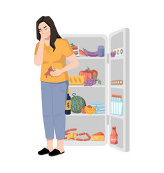

A bulimia é um transtorno alimentar caracterizado por consumo excessivo de alimentos em um curto período de
tempo e preocupação excessiva com o aumento de peso, o que leva ao surgimento de comportamentos compensatórios
após as refeições para evitar o ganho de peso, como por exemplo vômitos forçados, uso de laxantes ou prática
excessiva de atividade física.
A maioria dos casos de bulimia acontece em mulheres jovens e, além da preocupação excessiva com o ganho de peso,
a pessoa pode também ter anorexia nervosa, transtorno de boderline e transtorno depressivo maior, por exemplo.
A bulimia é uma transtorno que impacta diretamente na qualidade de vida da pessoa e da família, já que gera
angústia e preocupação em função do seu comportamento. Por isso, é importante que ao ser percebido qualquer
sinal indicativo de bulimia, a pessoa receba apoio dos familiares e seja acompanhado por um nutricionista e
psicólogo com o objetivo de melhorar a sua qualidade de vida e evitar os sintomas relacionados com a bulimia.